Dienste
Klick auf ein Bild für die Großansicht Live-Ansicht
Live-Ansichtaihub
Zentraler KI-Hub mit Chat-Web-UI, Sprach- und Videobots sowie Anbindung an Telegram, Discord, Matrix, Signal und Jitsi. Tools, RAG-Wissensspeicher, Text-to-Speech via Piper. Mehrbenutzerfähig mit wählbaren Persönlichkeiten – Standard ist die eigene aihub-„Seele". Zugriff geschützt per Login mit eigenem Owner-Konto und pro Nutzer getrennten Kontingenten.
 Live-Ansicht
Live-Ansichtaiagent
Lokaler KI-Coding-Agent mit Web-UI, Multi-User- und Multi-Projekt-Betrieb. Jede Instanz isoliert über eigene Docker-Volumes, Hostname-Routing per Caddy, reproduzierbare Nix-Umgebung.
 Live-Ansicht
Live-Ansichtfinance
Buchhaltungs- und Dokumenten-Stack: paperless-ngx nimmt alle Belege per OCR auf, eine KI klassifiziert und bucht sie in Firefly III. KI-Kosten automatisch erfasst, Push-Reports via Gotify.
 Anmeldung
Anmeldung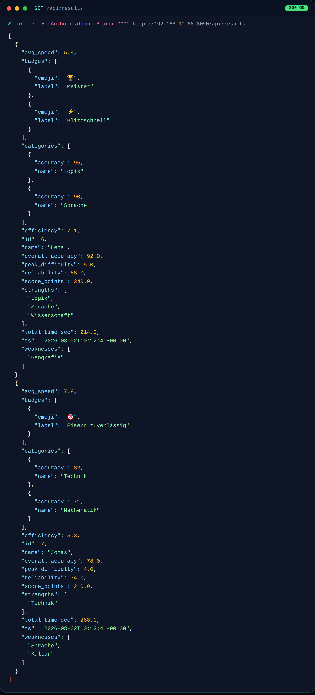
REST-APIskilltest · Kompetenz-Radar
Adaptiver Kompetenztest für Menschen: misst Stärken über sieben Gebiete, mit KI-Lehrer, Training, Badges und Bestenlisten. Inklusive Lehrer- und Klassen-Modus für Nachhilfe. Sämtliche Funktionen sind auch über eine token-authentifizierte REST-API (Endpunkte unter /api/, Zugriff per Bearer-Token) nutzbar – mit mehreren benannten Tokens pro Konto, die sich einzeln widerrufen lassen.
 Live-Ansicht
Live-Ansichtnotebookllm
NotebookLM-Klon: grounded RAG mit Inline-Zitaten und pro Notebook isolierter Vektor-Collection. Voll mehrsprachig (DE/EN/IT/FR) – antwortet stets in der Sprache der Frage.
 Live-Ansicht
Live-Ansichtnetdata
Echtzeit-Monitoring des Homeservers – CPU, RAM, Disk, Netzwerk und Container-Metriken sekundengenau, mit langfristiger Speicherung, ohne externe Cloud.
↗ Quellcode Live-Ansicht
Live-Ansichtinventar
Inventarverwaltung mit FastAPI-Backend und eigenem Frontend. Persistenz in MariaDB, als arm64-Images für den Raspberry Pi gebaut und via Docker Compose bereitgestellt.
 Live-Ansicht
Live-Ansichtportainer
Web-Oberfläche zur Verwaltung sämtlicher Docker-Container, Volumes und Netzwerke – Deployments und Logs auf einen Blick.
↗ Quellcode Live-Ansicht
Live-AnsichtHome Assistant
Zentrale Smart-Home-Steuerung: Geräte, Sensoren, Szenen und Automationen an einem Ort, mit anpassbaren Dashboards. Vollständig lokal, ohne Hersteller-Cloud.
↗ Quellcode Live-Ansicht
Live-AnsichtPi-hole
Netzwerkweiter Werbe- und Tracker-Blocker als DNS-Sinkhole. Schützt alle Geräte im WLAN zentral – schneller, sauberer und privater surfen ohne Client-Software.
↗ Quellcode Live-Ansicht
Live-AnsichtSearXNG
Datenschutzfreundliche Meta-Suchmaschine: bündelt Ergebnisse vieler Suchdienste, ganz ohne Tracking, Werbung oder Profilbildung. Selbst gehostet als private Suche fürs ganze Netz, mit deutscher Oberfläche und JSON-API.
↗ Quellcode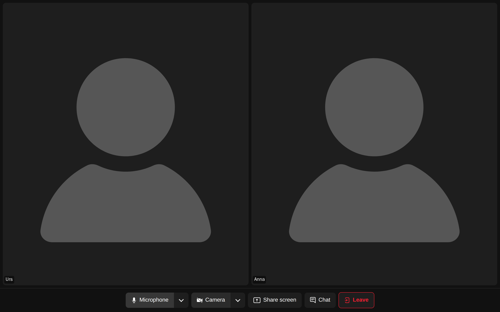
Live-AnsichtLiveKit Meet
Selbst gehostete Video-Konferenz auf Basis von LiveKit (WebRTC) und Next.js: Räume per Link, Kamera, Mikrofon, Bildschirmfreigabe und Chat. Läuft über verschlüsseltes HTTPS/WSS im eigenen Netz – ohne Cloud-Dienst, ohne fremde Server.
↗ Quellcode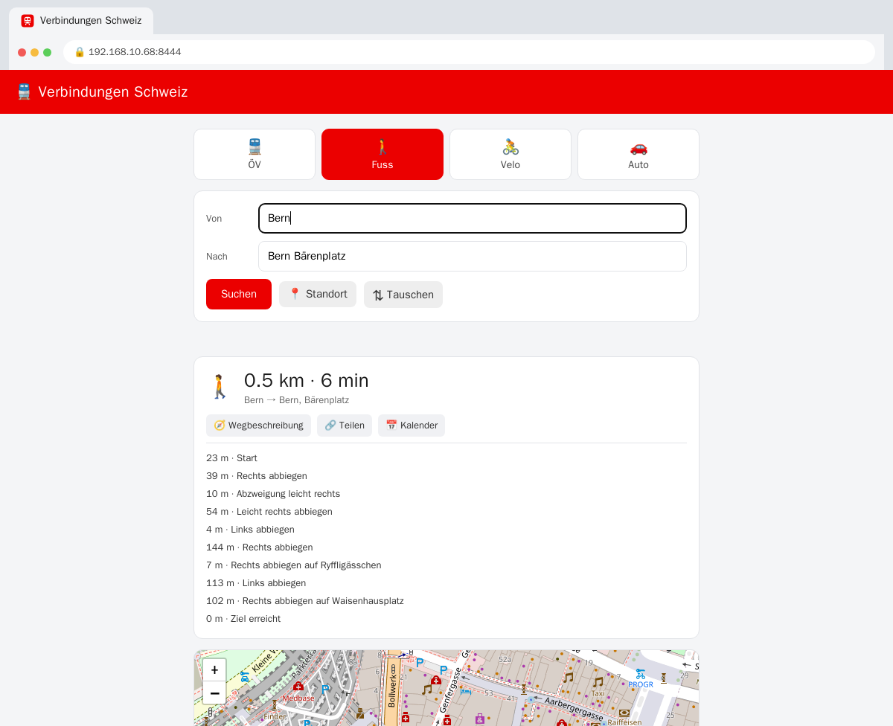
Live-AnsichtVerbindungen Schweiz
Ein Dienst, zwei Welten: öffentlicher Verkehr (SBB & übriger CH-ÖV über die freie Open-Data-Plattform) und Fuss-/Velo-/Auto-Routing über selbst gehostetes OSRM auf OpenStreetMap-Basis – umschaltbar in einer Oberfläche, mit eigener JSON-API.
↗ Open-Data-API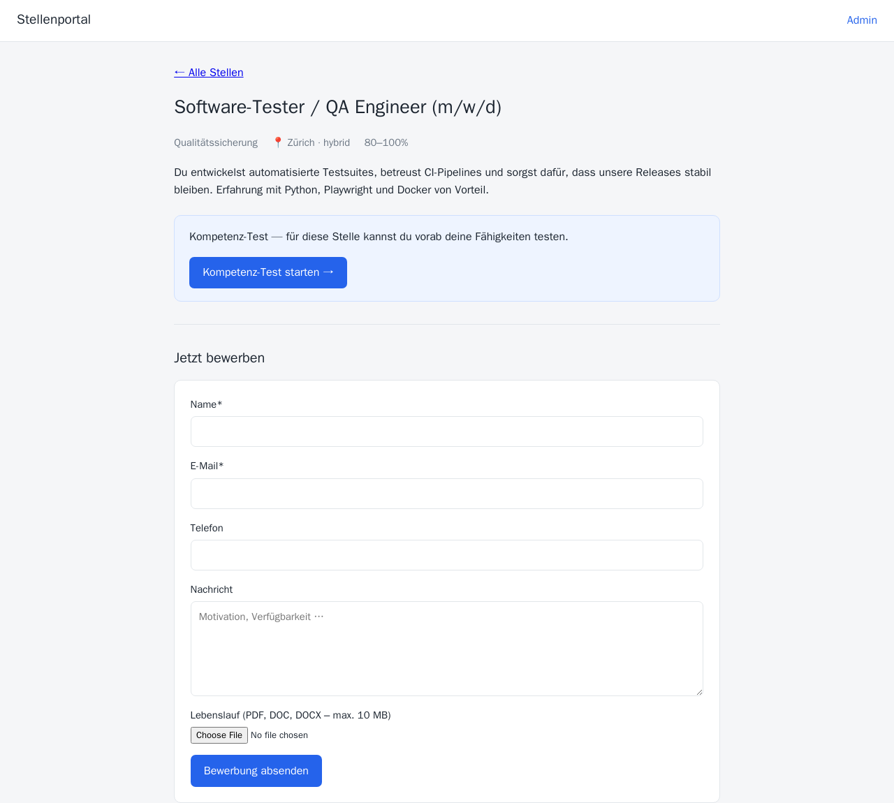
Bewerbung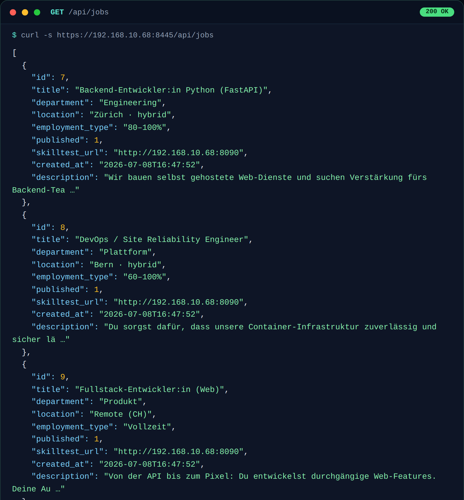
REST-APIStellenportal
Job-Board zum Ausschreiben offener Stellen mit Online-Bewerbung: Interessierte bewerben sich direkt im Browser samt Lebenslauf-Upload, ein passwortgeschützter Admin-Bereich verwaltet Stellen und eingehende Bewerbungen. Pro Stelle lässt sich der Kompetenz-Test verknüpfen – Bewerbende testen vorab ihre Fähigkeiten. Über eine REST-API (Endpunkte unter /api/) sind veröffentlichte Stellen offen abrufbar; das Verwalten von Stellen und Bewerbungen läuft token-authentifiziert per Bearer-Token, mit mehreren benannten Tokens.
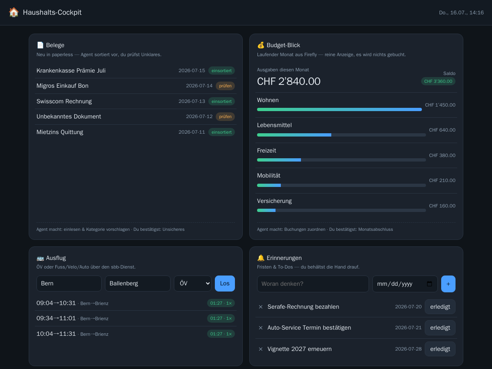
Live-AnsichtHaushalts-Cockpit
Ein Ort für vier private Alltags-Routinen: neue Belege aus der Dokumentenverwaltung, der Budget-Blick aus der Buchhaltung, die Ausflugsplanung mit ÖV & Velo/Auto und persönliche Erinnerungen. Jede Karte nach dem Prinzip der Assistent bereitet vor, der Mensch bestätigt – nichts Irreversibles läuft automatisch, Tokens bleiben serverseitig.
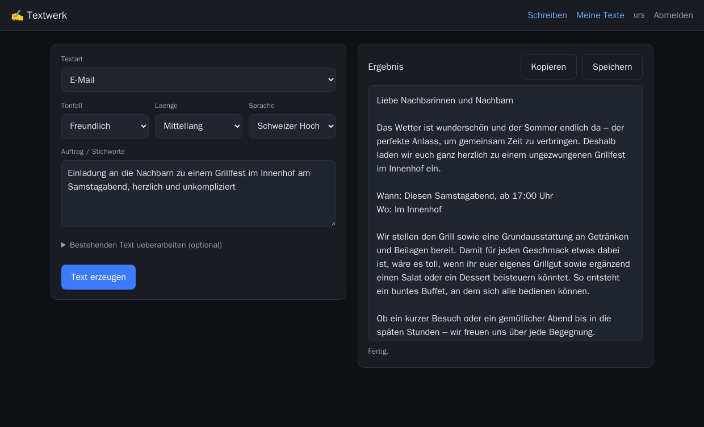
Schreiben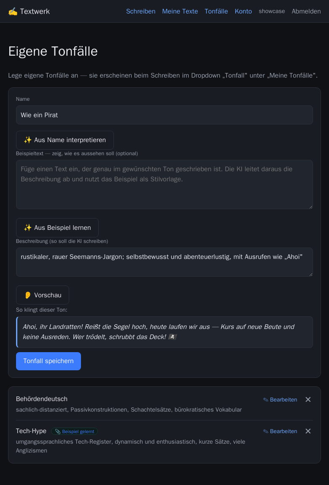
Tonfälle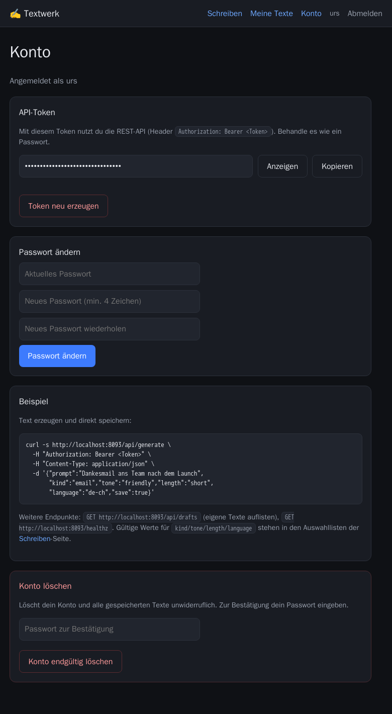
KontoTextwerk · KI-Schreibstudio
Erzeugt fertige Texte aus ein paar Stichworten – E-Mails, Artikel, Briefe, Social-Posts, Reden oder Geschichten, live tippend im Browser und direkt editierbar. Sprache frei wählbar inkl. Schweizer Hochdeutsch und echtem Mundart. Highlight: eigene Tonfälle – die KI interpretiert sie aus einem Stichwort oder lernt sie aus einem Beispieltext, mit Live-Vorschau. Entwürfe sind durchsuchbar (Tags, Tag-Wolke), als .txt/.md/.docx exportier- und weiterschreibbar und teilbar – per öffentlichem Read-only-Link oder intern an andere Nutzer. Schreib-Aufträge lassen sich zudem weiterleiten – sie öffnen sich beim Empfänger vorbefüllt im Studio. Mehrbenutzerfähig mit Rollen & Admin-Nutzerverwaltung (Owner per Konfiguration): Nutzer anlegen mit generiertem Startpasswort, Rollen ändern, Passwörter zurücksetzen. Dazu Konto-Selbstverwaltung (API-Token/Passwort) und token-basierte REST-API.
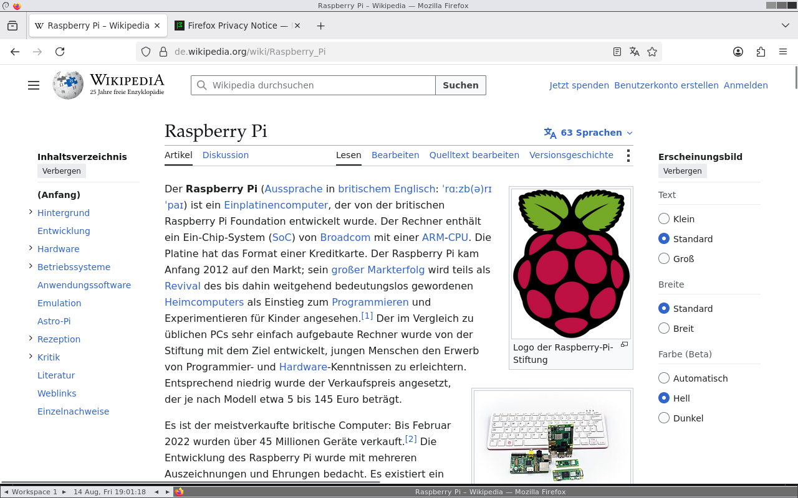
Live-Desktopsteuerwerk · Computer Use
Eine KI bedient einen vollen virtuellen Linux-Desktop: Sie sieht bei jedem Schritt einen Screenshot und klickt, tippt und navigiert selbst, bis der in Alltagssprache gestellte Auftrag erledigt ist. Desktop samt Browser läuft im Container und ist als Live-Bild (noVNC) im Browser sichtbar – man kann jederzeit selbst eingreifen. Das steuernde Modell ist umschaltbar: lokal über ein bildfähiges Modell (verbrauchsgemessen) oder Claude mit nativem Computer-Use-Tool für präzise GUI-Aufgaben. Merkt es, dass es sich im Kreis dreht, bricht es ehrlich ab statt blind weiterzuklicken; laufende Aufträge lassen sich jederzeit stoppen, erledigte löschen. Dank getrennter Desktops laufen mehrere Aufträge parallel. Im Desktop stehen echte Programme bereit – Firefox, LibreOffice, GIMP, Dateimanager & mehr –, sodass die KI ganze Abläufe erledigt (z. B. Text und Bild aus Wikipedia in ein Dokument einfügen); danach räumt es den Desktop selbst wieder auf. Aufträge lassen sich zu Projekten bündeln – die KI zerlegt ein Ziel in Teilaufgaben, die nacheinander laufen und sich auf Wunsch in Zeitabständen (Intervall oder feste Uhrzeiten) automatisch wiederholen. Jedes Ergebnis ist nachprüfbar: eine belegte Aussage samt End-Screenshot, aus dem sie stammt. Neben dem eingebauten Desktop steuert es bei Bedarf auch externe Linux- und Windows-Maschinen per VNC oder RDP fern – mit Live-Bild; die Ziel-Rechner richtet man direkt im Browser ein. Mehrbenutzerfähig mit SSO und token-authentifizierter REST-API – inklusive Datei-Up- und -Download, um der KI Dateien zu geben und Ergebnisse abzuholen.
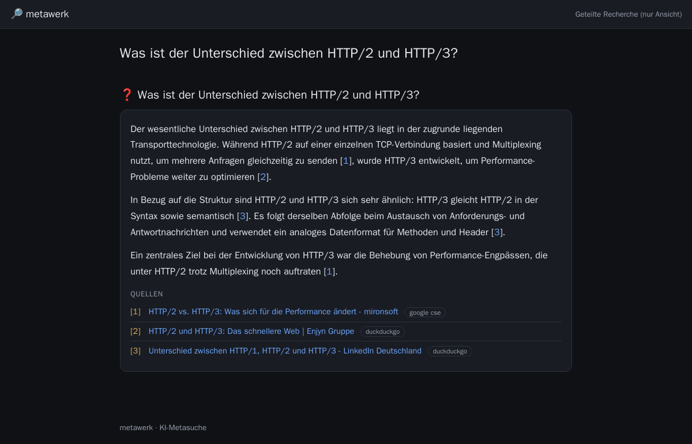
Antwortmaschinemetawerk · KI-Metasuche
Eine Frage rein, eine belegte Antwort raus. metawerk durchsucht über die
selbst gehostete SearXNG-Metasuche mehrere Suchmaschinen gleichzeitig,
sammelt echte Web-Treffer und lässt eine KI daraus eine zusammenhängende Antwort mit
klickbaren Quellenverweisen [1] [2] … formulieren – jede Sachaussage ist bis
zur Originalquelle rückverfolgbar, und nicht belegte Treffer fallen automatisch weg. Statt einer
nüchternen Trefferliste entsteht ein Gespräch: Anschlussfragen führen dieselbe
„Recherche“ fort und kennen den bisherigen Verlauf, samt vorgeschlagener Weiterfragen. Fehlt die
Faktenlage, sagt es das ehrlich, statt zu erfinden. Recherchen lassen sich per Link
öffentlich teilen (nur Ansicht – dieses Bild ist so ein geteilter Link).
Mehrbenutzerfähig mit lokalem Login oder SSO, zentraler Verbrauchsmessung über
den Kern-Proxy und einer token-authentifizierten REST-API. Der
!frag-Kurzbefehl in den Schwester-Diensten springt direkt hierher.
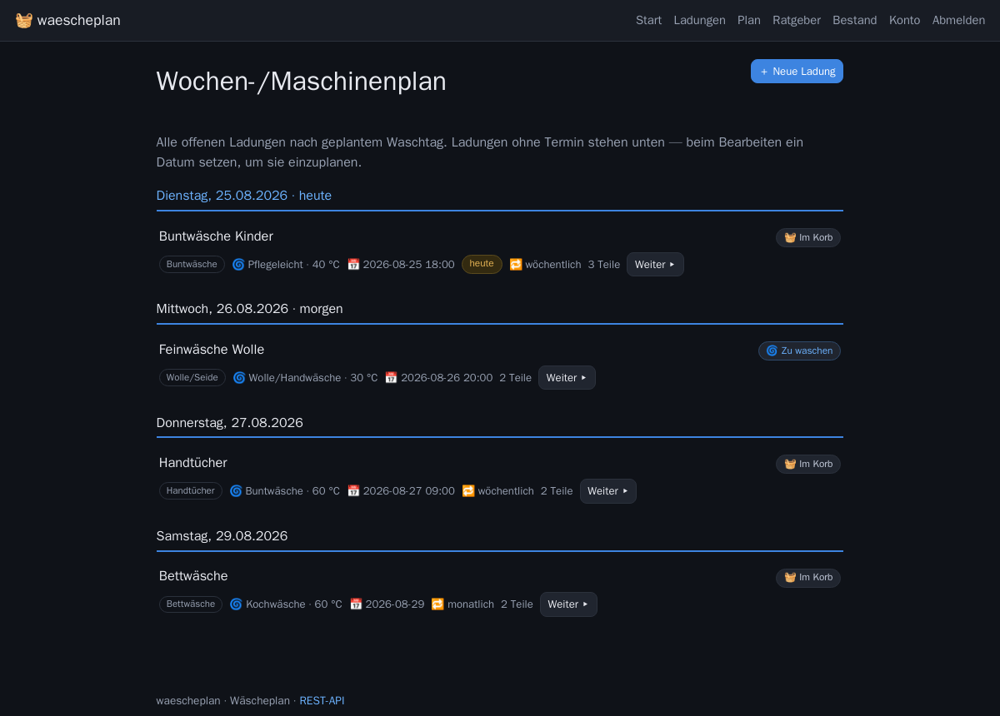
Plan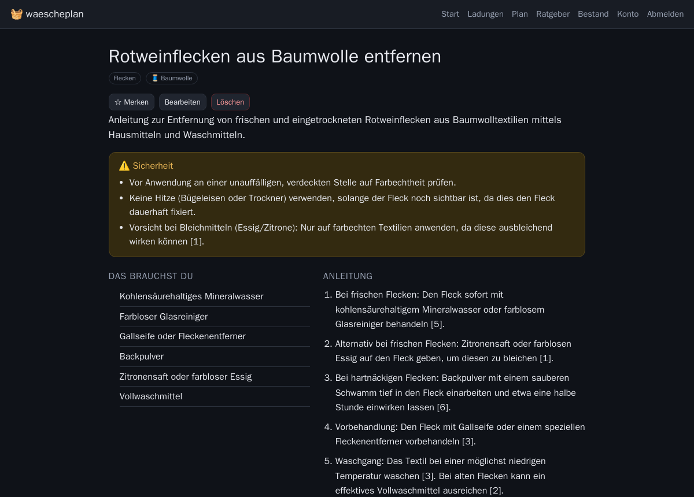
Ratgeberwaescheplan · Wäscheplan
Der digitale Waschküchen-Assistent. waescheplan sortiert die Wäsche in Ladungen und schlägt per KI das sicherste passende Waschprogramm vor – Temperatur, Schleuderzahl und Trocknen, abgeleitet aus Wäscheart und den einzelnen Teilen. Jede Ladung durchläuft einen Ablauf (Im Korb → Waschen → Trocknen → Bügeln → Verräumt) und bekommt optional Datum, Uhrzeit, Erinnerung und Wiederholung – daraus entsteht der Wochen-/Maschinenplan. Wiederkehrende Ladungen legen sich nach dem Abschliessen automatisch neu an, und fällige Erinnerungen kommen per Push (Gotify) aufs Handy. Ein KI-Ratgeber erstellt aus echter Web-Recherche über die selbst gehostete SearXNG-Metasuche belegte Anleitungen zu Flecken, Pflege und Waschen – mit Mitteln, Schritten, Quellen [n] und Sicherheitshinweisen. Dazu eine Bestandsüberwachung für Waschmittel & Co. Mehrbenutzerfähig mit lokalem Login oder SSO, zentraler Verbrauchsmessung über den Kern-Proxy und einer token-authentifizierten REST-API.
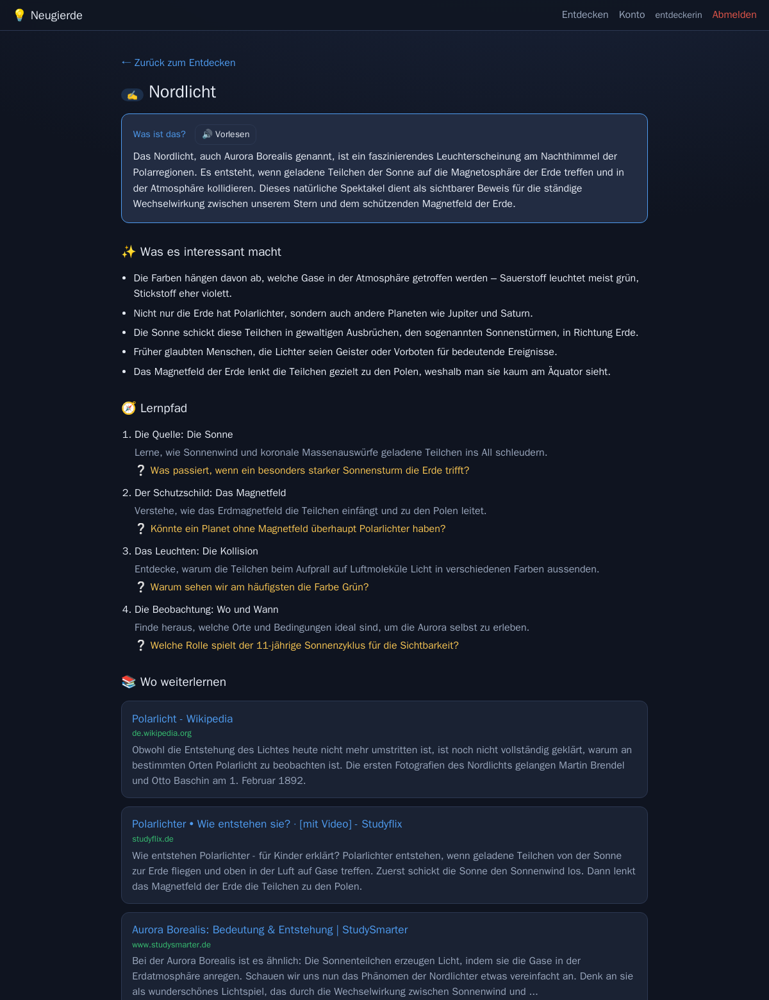
Objekt-Erklärerneugierde · Objekt-Erklärer
Der Neugier-Wecker: Man zeigt neugierde ein Foto (Upload oder Live-Kamera), gibt einen Begriff als Text ein oder spricht ihn einfach ein – und die KI erklärt das Objekt und macht Lust auf mehr. Jede Erklärung hat vier Teile: Was ist das?, „Was es interessant macht“ (überraschende Fakten), ein Lernpfad in Schritten mit anregenden Fragen und „Wo weiterlernen“ – echte, geprüfte Quellen aus der selbst gehosteten SearXNG-Metasuche statt erfundener Links. Die Bilderkennung läuft über ein multimodales Modell, der Text über ein starkes Sprachmodell. Jede Erklärung lässt sich vorlesen (serverseitige Sprachsynthese, klingt auf jedem Gerät gleich), und die Spracheingabe wandelt ein lokales Whisper-Modell in Text. Mehrbenutzerfähig mit eigenem Verlauf, Login und einer token-authentifizierten REST-API.
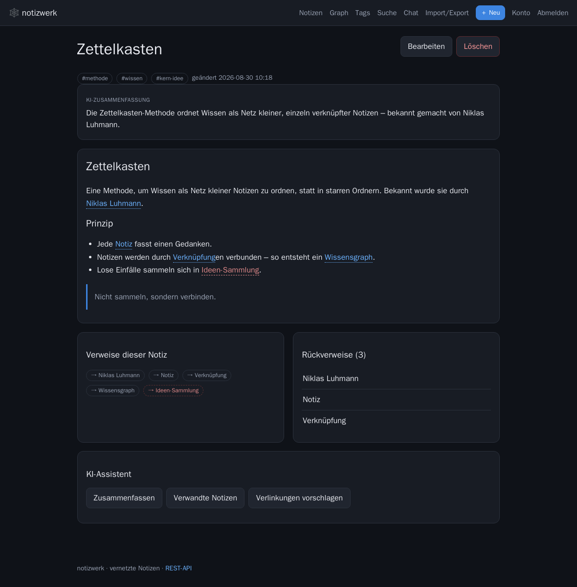
Notiz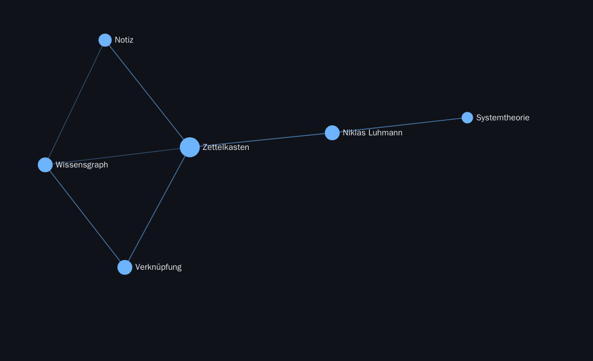
Graph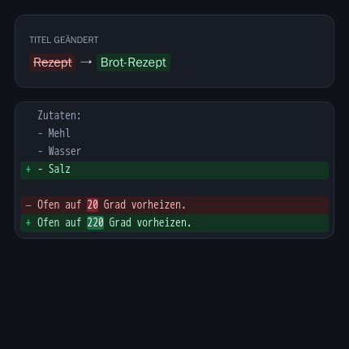
Diffnotizwerk · vernetzte Notizen
Ein persönliches Wissensnetz nach dem Vorbild von Obsidian – nur self-hosted. Man schreibt
Notizen in Markdown, die sich per [[Wiki-Link]]
gegenseitig verweisen. Daraus entstehen automatisch Rückverweise und eine
begehbare Graph-Ansicht (Notizen als Knoten, Links als Kanten). Verweist man auf
eine Notiz, die es noch nicht gibt, wird der Link „rot“ und legt sie beim Klick an. Notizen tragen
Tags und Ordner, gefunden wird per Volltext- und
semantischer Suche (Embeddings). Dazu ein KI-Assistent:
zusammenfassen, verwandte Notizen und passende Verknüpfungen vorschlagen sowie ein
Chat (RAG) über das ganze Archiv mit Quellenbelegen [n]. Über
OKF (Open Knowledge Format) lassen sich alle Notizen als Markdown-Bundle mit
Frontmatter exportieren und importieren – direkt mit Obsidian & Co.
austauschbar. Notizen lassen sich in Sammlungen bündeln und mit anderen Konten
teilen – rollenbasiert als Leser (nur lesen) oder Bearbeiter
(lesen & ändern) – oder per öffentlichem Link ganz ohne Login schreibgeschützt
freigeben. Jede Notiz führt einen Änderungsverlauf (wer wann was geändert hat);
Fassungen lassen sich zeilen- und wort-genau vergleichen und
direkt aus dem Vergleich wiederherstellen – nicht-destruktiv und mit klarer
Rollentrennung (Bearbeiter sehen Verlauf und Vergleich, das Wiederherstellen bleibt dem Besitzer
vorbehalten). Mehrbenutzerfähig mit lokalem Login oder SSO, zentraler
Verbrauchsmessung über den Kern-Proxy und einer token-authentifizierten REST-API.
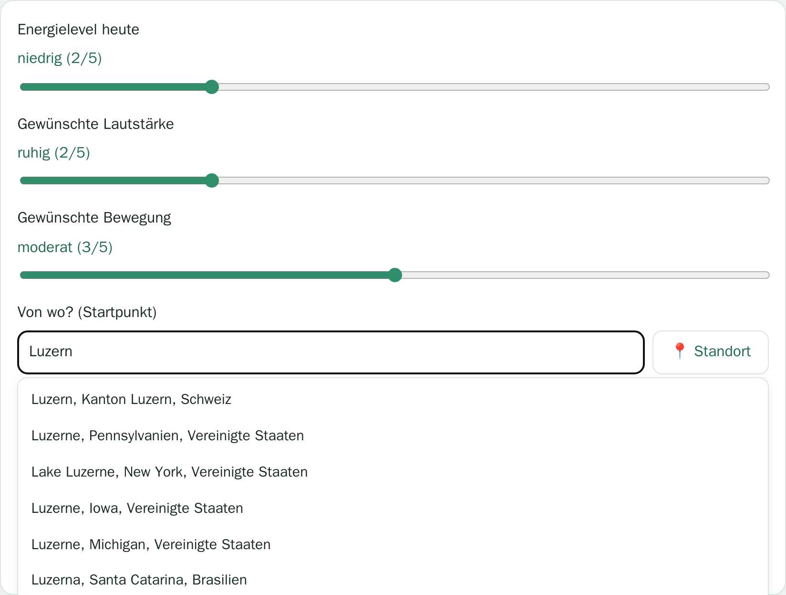
Planen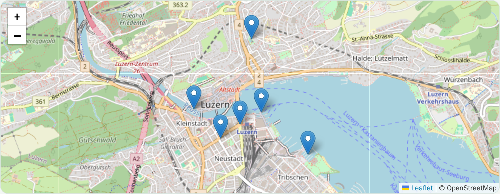
Karte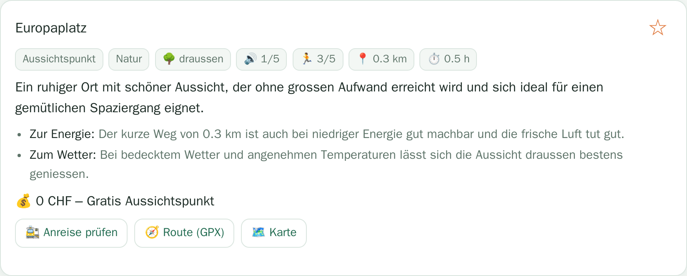
Ausflugausflugswerk · Ausflugsplaner
Man sagt, wie es einem heute geht – der Rest richtet sich danach. Über drei Regler stellt man das Energielevel, die gewünschte Lautstärke (leise ↔ lebhaft) und die gewünschte Bewegung (ruhig ↔ sportlich) ein, dazu Budget, Personenzahl, Datum und den Startpunkt (per GPS, getippte Koordinaten oder Ortssuche mit Autovervollständigung). Daraus baut die KI passende Ausflüge: sie holt echte Orte in der Nähe aus OpenStreetMap (Overpass), das Wetter am Zielort von Open-Meteo und wählt Ziele, die zu Zustand, Wetter und Budget passen – jeweils mit Kostenschätzung und einer kurzen Begründung „zur Energie“ und „zum Wetter“. Man wählt die Fortbewegung (zu Fuss, Velo, Auto oder ÖV); die Anreise und grobe Fahrtkosten rechnet der eigene ÖV-&-Routing-Dienst (OSRM-Profile). Jeder Vorschlag liegt auf einer Leaflet-Karte, lässt sich merken und als GPX exportieren: einzelne Route, alle Ziele als Wegpunkte oder eine verkettete Tagesroute in einem Track – als Rundtour zurück zum Start oder als linearer Hinweg. Mehrbenutzerfähig mit lokalem Login oder SSO, zentraler Verbrauchsmessung über den Kern-Proxy und einer token-authentifizierten REST-API.
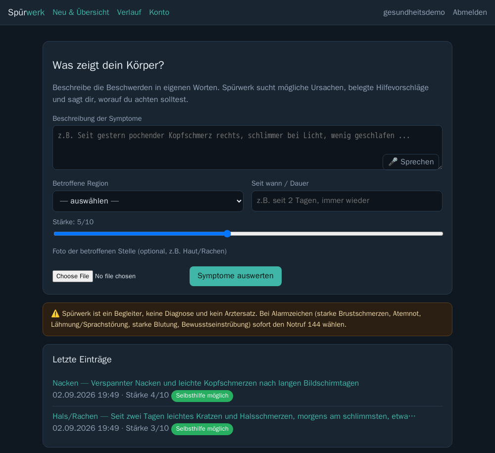
Erfassen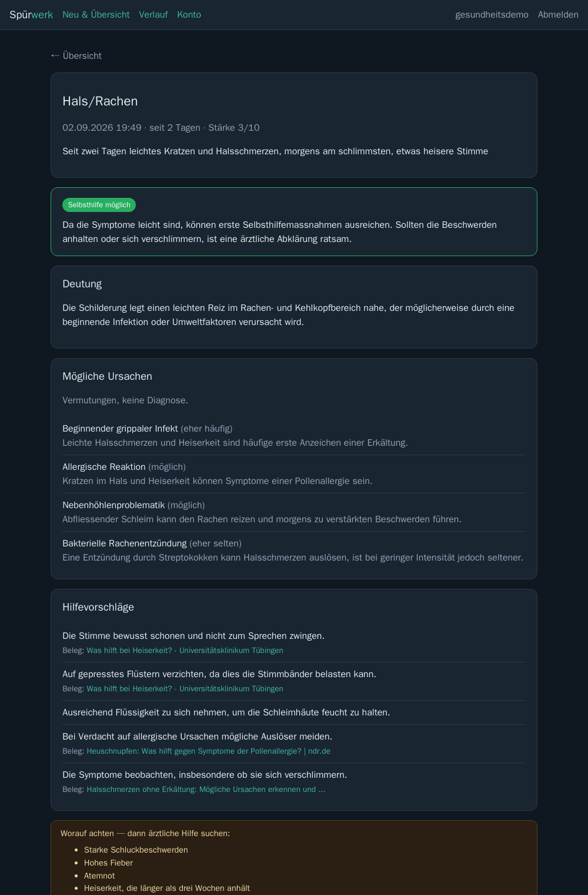
Auswertung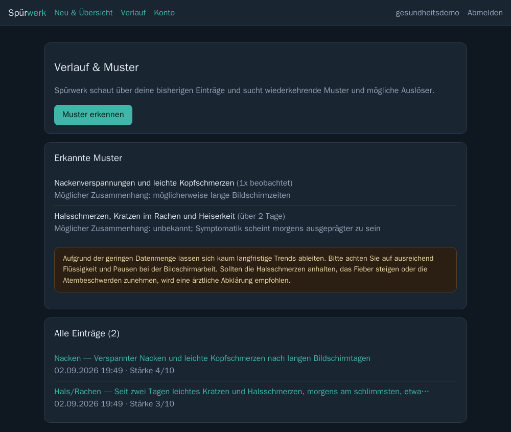
Musterspuerwerk · Symptom-Begleiter
Man beschreibt in eigenen Worten, was der Körper zeigt – dazu die betroffene Region, seit wann und die Stärke (1–10). Statt zu tippen kann man die Beschwerden auch einsprechen oder ein Foto der betroffenen Stelle hochladen, das eine Vision-KI mitliest. Daraus macht die KI eine vorsichtige Deutung, nennt mögliche Ursachen mit Wahrscheinlichkeit (bewusst „keine Diagnose“) und gibt konkrete Hilfevorschläge – jeweils mit Quellenbelegen aus der eigenen Meta-Suche. Sie markiert Warnzeichen und schätzt die Dringlichkeit ein (von „Selbsthilfe möglich“ bis zum klaren Notruf 144 bei Alarmzeichen) – als Begleiter, nicht als Arztersatz. Jeder Eintrag wird gespeichert, sodass ein Verlauf entsteht und die KI wiederkehrende Muster und mögliche Auslöser erkennt (etwa Häufungen nach langen Bildschirmtagen). Mehrbenutzerfähig mit lokalem Login oder SSO, zentraler Verbrauchsmessung über den Kern-Proxy und einer token-authentifizierten REST-API.
Responsive
aihub & LiveKit Meet auf jedem Gerät – Smartphone & Tablet


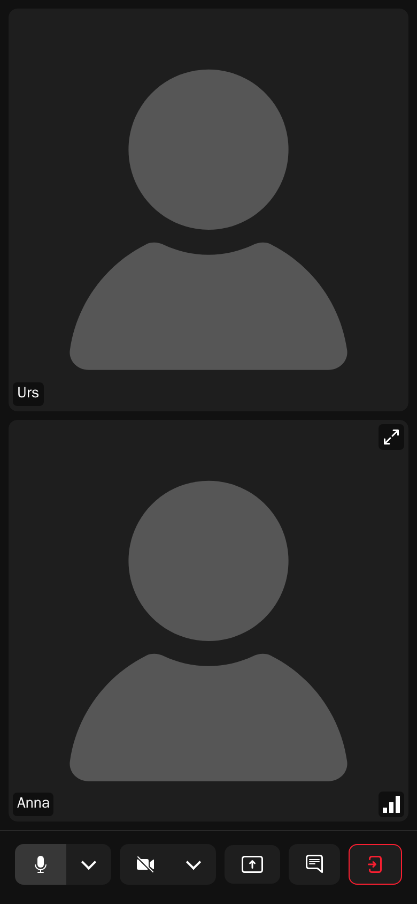
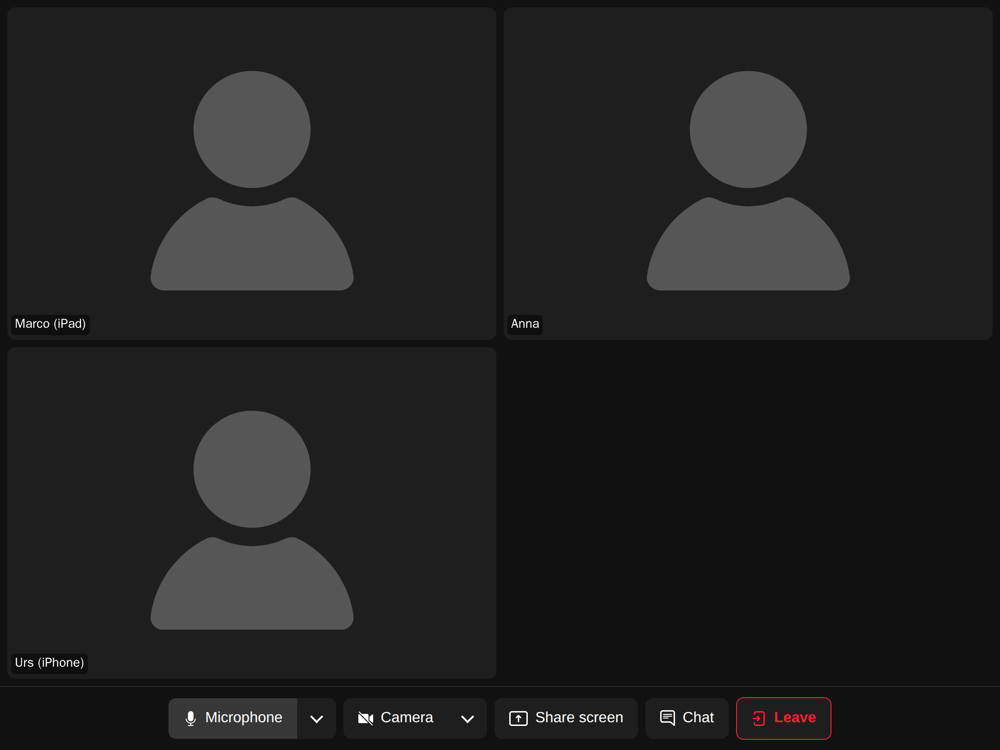